Bonjour à tous,
L’idée de cet article vient de ce sujet sur le slack grrr portant sur l’utilisation de solutions autres que shinyapps pour déployer des applications shiny.
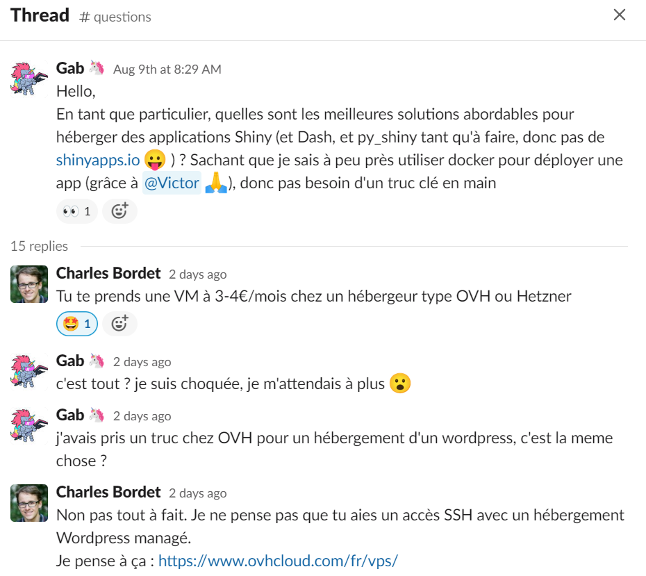
Au vu de cette conversation je me suis dit que j’allais tenter de déployer sur une machine virtuelle hébergée chez OVH, une application shiny et une API plumber. Le tout étant encapsulée dans une image Docker. N’ayant utilisé Docker que très rarement auparavant c’était également l’occasion de se lancer sur cette techno !
Etape 1 : créer sa machine virtuelle sur OVH
La première étape consiste à se rendre sur le site mentionné par Charles Bordet sur le fil de conversation présent ci-dessus : https://www.ovhcloud.com/fr/vps/
Pour se lancer et s’entrainer on choisit une machine “starter” à 3€. Ce n’est pas une bête de compétition mais c’est suffisant pour ce qu’on souhaite faire ici.
Au moment de la configuration de sa machine, on pense à choisir une machine avec application, et on précise qu’on souhaite que Docker soit pré-installé.
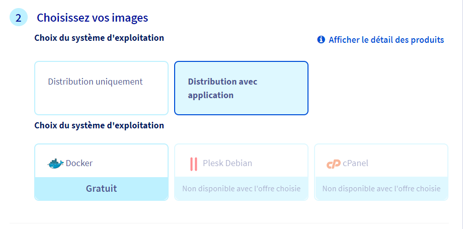
Une fois que tout est configuré et que le paiement est fait, il faut attendre quelques minutes avant de recevoir la confirmation par mail que la machine virtuelle est utilisable.
Je vous invite fortement à consulter cette vidéo pour vous familiariser avec l’utilisation de ces outils. Il est notamment expliqué comment configurer le logiciel Putty, qui permettra, entre autres, d’utiliser Docker via l’interface en ligne de commandes, pour déployer nos outils.
Pour lancer la config de Putty, je me rends d’abord sur l’interface d’OVH pour retrouver l’IP de ma machine virtuelle, et constate qu’elle répond au doux nom de vps-1d32547a.vps.ovh.net, que l’OS installé est Debian 10, et que Docker est également bien installé.
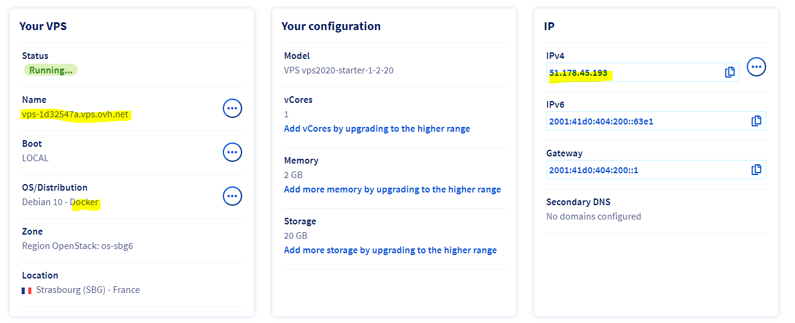
Je me connecte via Putty sur la machine 51.178.45.193, une fois que c’est fait je créé 2 répertoires de travail, l’un pour mon appli shiny (développée avec le package R {golem}) et l’autre pour mon API (dévelopée avec le package R {plumber}).
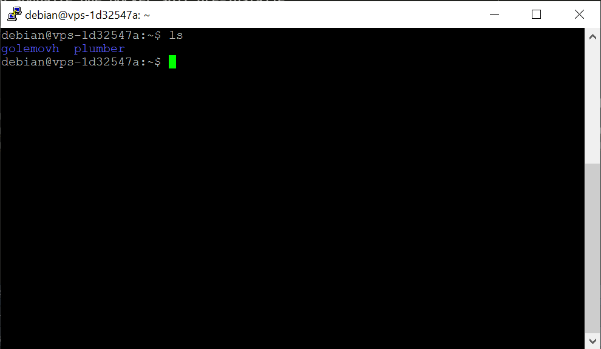
Etape 2 : création de l’application shiny et déploiement
On part du principe que vous savez créer une appli via le package {golem}, si ce n’est pas le cas, je vous invite à vous diriger vers la documentation dédiée.
Idem, étant un utilisateur “pas novice mais pas loin” de Docker, je ne me permettrais pas de faire un tuto spécifique dans cet article, si vous souhaitez en apprendre davantage je vous invite à consulter de la doc sur le sujet.
Une fois notre appli créée (ici j’utilise une appli “coquille vide” qui ne fait absolument rien si ce n’est afficher son nom), on créé une fichier tar.gz avec les sources du package correspondant via la commande devtools::build().
J’utilise ensuite les fonctionnalités de {golem} pour créer un fichier crucial, qui est en quelque sorte la recette de cuisine de création de l’image Docker : le Dockerfile. Pour cela je me repose sur la fonction golem::add_dockerfile().
J’obtiens un fichier comme ceci, qui va me permettre d’avoir tous les composants essentiels pour faire tourner mon appli.
Pour s’assurer que tout fonctionne pour la création de mon image Docker, je dépose mon Dockerfile et le tar.gz de mon package dans le même répertoire sur ma machine virtuelle.
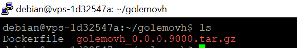
J’ai personnellement utilisé WinSCP pour réaliser ces opérations. On aurait pu le faire de manière plus propre en clonant le contenu d’un dépôt Github notamment. Pour faire du “vrai” déploiement d’appli, j’utiliserais cette méthode.
On passe maintenant à la création de l’image Docker via la commande docker build, qui va lancer une à une les instructions présentes dans le Dockerfile.
docker build -t mydockergolem .mydockergolem correspond au nom de l’image Docker créée, il faut le retenir pour l’utiliser pour l’étape suivante : l’exécution d’une instance Docker.
Pour cela on utilise docker run.
docker run -d -p 3838:3838 --rm mydockergolemOn peut voir qu’on a fait référence à l’image mydockergolem. Shiny utilise le port 3838 pour son fonctionnement, on montrera plus loin dans cet article comment gérer cette partie.
Pour vérifier que notre conteneur Docker est bien actif on utilise la commande docker ps.
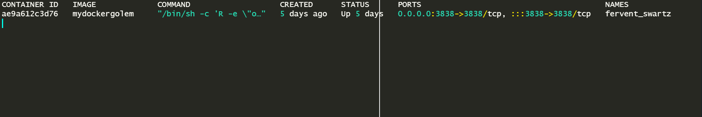
Il est bien présent, tout est ok, mais il va falloir être encore un peu patient pour pouvoir aller consulter notre (super) appli (qui ne fait rien).
D’ici là, si besoin, toutes les sources nécessaires sont présentes ici.
Etape 3 : création de l’API plumber et déploiement
L’objectif de cet article n’est pas de détailler le fonction du package {plumber}, mais juste de montrer comment héberger l’API créée.
Pour en savoir plus, rdv sur la doc officielle.
En me basant sur la documentation, j’ai développé mon fichier plumber.R, qui contient 2 fonctions toutes simples, normalMean qui va renvoyer la moyenne de 10 nombres tirés aléatoirement dans une loi normal, et randomPlot qui va faire un histogramme de 100 valeurs tirées également dans une loi normale.
Toujours grâce à la documentation, dans la section Hosting, je trouve toutes les infos relatives à la création de mon Dockerfile.
Je copie mon fichier plumber.R et mon Dockerfile sur ma machine virtuelle, dans le répertoire plumber.
Comme pour mon application shiny, je vais enchainer consécutivement une commande docker build pour une commande docker run.
docker build -t mydockerplumber .docker run -d -p 8000:8000 --rm -vpwd:/app mydockerplumberIci on voit qu’on fait référence au port 8000, il va falloir garder ca en tête pour la suite (on se rappelle déjà du port 3838 pour shiny). Etant loin d’être expert sur ces sujets, je vous laisse consulter de la doc dédiée si nécessaire.
En l’état, comme pour l’appli shiny, ca ne fonctionne pas :(
Il va falloir retourner du côté de l’interface Web de gestion de ma machine virtuelle pour gérer l’ouverture des ports dans le pare feu.
Etape 4 : ouverture des ports dans le pare feu
Pour cette partie, je me suis largement inspiré de l’article de Charles Bordet sur l’ouverture des ports pour une machine sur AWS, merci à lui !
Sur mon interface de gestion OVH, je choisis la section “IP” sur le menu latéral de gauche pour après avoir cliqué sur les “…” je choisis “Configure the firewall”.
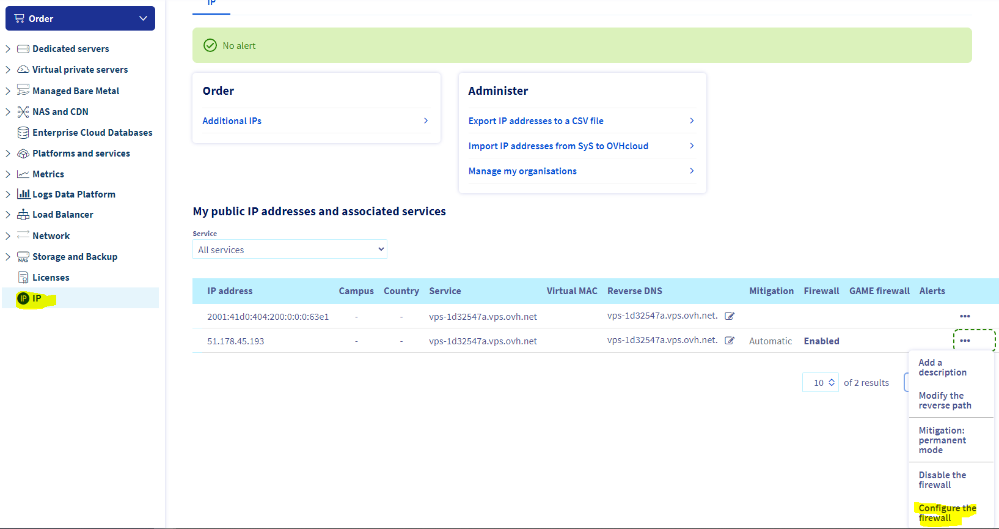
Ensuite je vais demander l’ouverture du port 3838 (pour mon appli shiny) et du port 8000 (pour mon API plumber), en utilisant “Add a rule”.
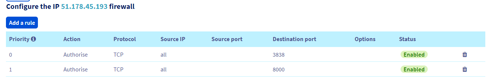
Etape 5 : alors ca marche ou ca marche pas ?
A priori tout est ok ! On connait par coeur l’IP de notre machine (51.178.45.193) et on a ouvert les ports nécessaires.
Essayons maintenant d’afficher notre appli shiny, dans le navigateur on tape http://51.178.45.193:3838.
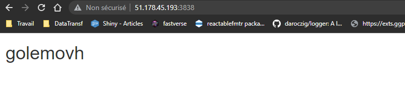
Comme attendu, cette appli ne fait rien de bien transcendant mais ca fonctionne !
Maintenant essayons d’utiliser notre API construite avec mon plumber. On se rappelle dans notre fichier plumber.R, on a 2 fonctions : normalMean et randomPlot. Elles ne prennent aucun paramètre en entrée, et s’appellent respectivement en utilisant http://monip/mean et http://monip/plot.
Testons l’appel à la fonction normalMean avec http://51.178.45.193:8000/mean :
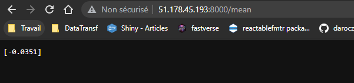
Et maintenant la fonction randomPlot avec http://51.178.45.193:8000/plot :
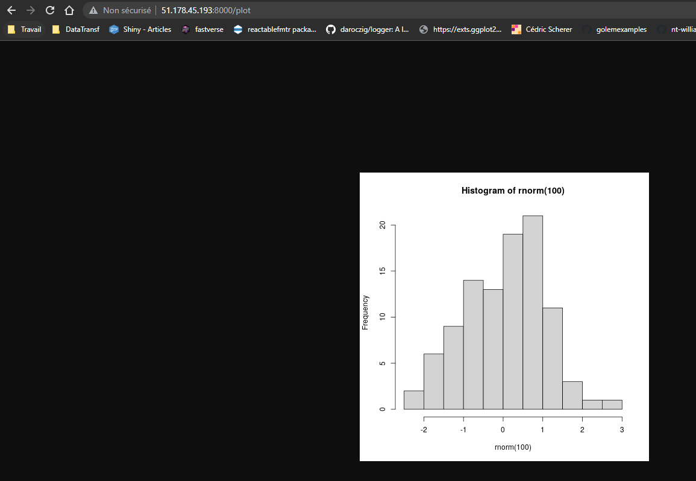
Ici aussi tout semble OK ! :)
Conclusion
Vous voici arrivés au bout de ce tuto rapide sur le déploiement d’applis shiny et d’API plumber sur OVH.
Certains sujets, comme shiny et plumber, sont survolés car probablement trop conséquents pour être abordés dans cet article.
D’autres, comme Docker ou les ports à ouvrir pour la transmission de données, sont également peu fouillés tout simplement car je suis plutôt novice sur ces questions.
Dans les améliorations possibles, si l’on souhaitait par exemple héberger des applis ou API de manière plus professionnelles, on pourrait imaginer faire l’acquisition d’un nom de domaine (une adresse IP n’étant pas le nom le plus sexy qui soit) ou passer à une formule plus onéreuse chez OVH pour avoir plus de ressources.